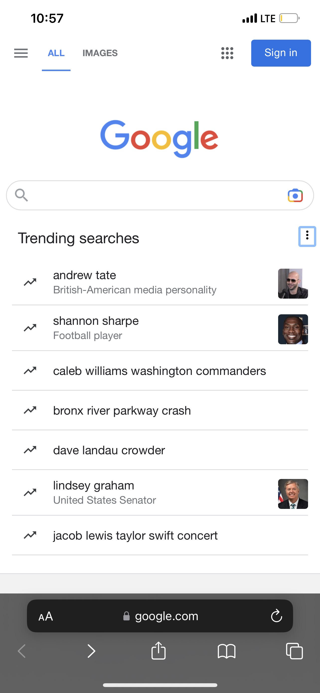
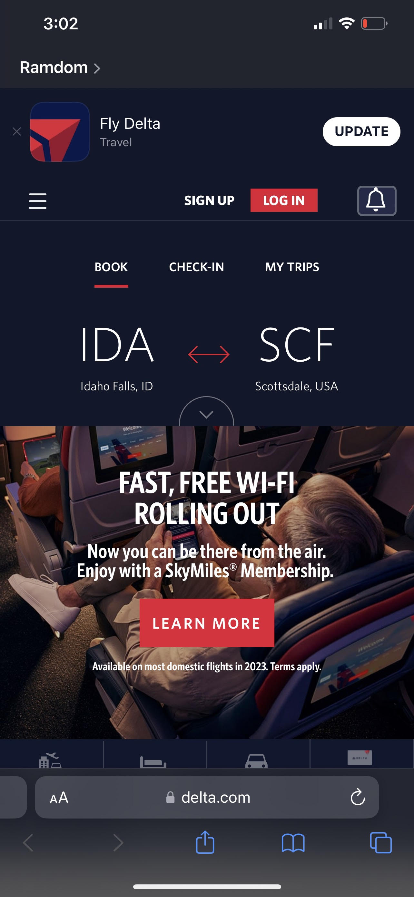

Hicks Law
Google Search
The website that Google has created for their search website is really good, using Hicks Law perfectly allowing the used to look right towards their logo, then their search bar. They achieved the websites main purpose which was tell people this is where you serach for things.
Visual Hierarchy
The Church Of Jesus Christ of the Latter Day Saints

The purpose of the Churches website is to emphasize how much they can offer and how much content they have to share. They want everyone to be drawn to the middle with a great contrast and they have positioned links that might interest people at first and then links to more services. They have escalated their images to equally catch the attention of the reader/viewer.
Fitts's Law
Delta Airlines
Delta Airlines created a website where they used Fitts's Law a Principle used to focused the users attention to where the developer wants the focal point to be, using the least amount of time to find what you are looking for. Delta placed their most wanted links in this case where you would like to go is to find flights from and where to go, as well as the dates.